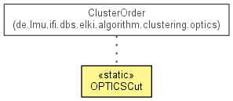

de.lmu.ifi.dbs.elki.visualization.opticsplot
Class OPTICSCut
java.lang.Object
 de.lmu.ifi.dbs.elki.visualization.opticsplot.OPTICSCut
de.lmu.ifi.dbs.elki.visualization.opticsplot.OPTICSCut
public class OPTICSCut
- extends Object

Compute a partitioning from an OPTICS plot by doing a horizontal cut.
| Methods inherited from class java.lang.Object |
clone, equals, finalize, getClass, hashCode, notify, notifyAll, toString, wait, wait, wait |
OPTICSCut
public OPTICSCut()
makeOPTICSCut
public static <D extends Distance<D>> Clustering<Model> makeOPTICSCut(ClusterOrderResult<D> co,
OPTICSDistanceAdapter<D> adapter,
double epsilon)
- Compute an OPTICS cut clustering
- Type Parameters:
D - Distance type- Parameters:
co - Cluster order resultadapter - Distance adapterepsilon - Epsilon value for cut
- Returns:
- New partitioning clustering